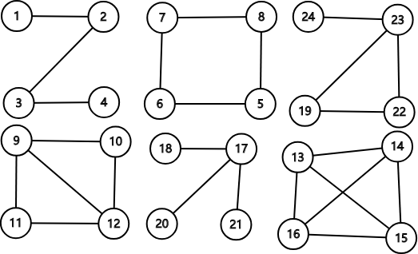
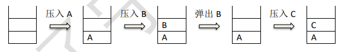

【NOIp2018】【初赛】普及组原题&题解 发表于 2019-03-03 | 更新于 2019-03-06 | 分类于 NOIp | 阅读次数： 本文字数： 6.7k | 阅读时长 ≈ 6 分钟 【NOIp2018】【初赛】普及组原题&题解 原题&答案普及组C++语言试题： 普及组答案： 题解单项选择题第$1$题以下哪一种设备属于输出设备：（ ） $$\text{A. 扫描仪}\quad\text{B. 键盘}\quad\text{C. 鼠标}\quad\text{D. 打印机}$$ 答案：$\text{D}$，打印机属于输出设备。 第$2$题下列四个不同进制的数中，与其它三项数值上不相等的是（ ）。 $$\text{A. }(269)_{16}\quad\text{B. }(617)_{10}\quad\text{C. }(1151)_{8}\quad\text{D. }(1001101011)_{2}$$ 答案：$\text{D}$，计算。 第$3$题$1\text{MB}$等于（ ）。 $$\text{A. }1000 \text{字节}\quad\text{B. }1024 \text{字节}\quad\text{C. }1000 \times 1000 \text{字节}\quad\text{D. }1024 \times 1024 \text{字节}$$ 答案：$\text{D}$，$1\text{MB}=2^{20}\text{Byte}$。 第$4$题广域网的英文缩写是（ ）。 $$\text{A. LAN}\quad\text{B. WAN}\quad\text{C. MAN}\quad\text{D. LNA}$$ 答案：$\text{B}$，广域网（$\text{Wide Area Network}$）的缩写是$\text{WAN}$。 第$5$题中国计算机学会于（ ）年创办全国青少年计算机程序设计竞赛。 $$\text{A. }1983\quad\text{B. }1984\quad\text{C. }1985\quad\text{D. }1986$$ 答案：$\text{B}$，$1984$年邓小平指出：“计算机的普及要从娃娃做起。”因此，教育部和中国科协委托中国计算机学会举办了全国青少年计算机程序设计竞赛。 第$6$题如果开始时计算机处于小写输入状态，现在有一只小老鼠反复按照CapsLock、字母键$\text{A}$、字母键$\text{S}$、字母键$\text{D}$、字母键$\text{F}$的顺序循环按键，即CapsLock、A、S、D、F、CapsLock、A、S、D、F、……，屏幕上输出的第$81$个字符是字母（ ）。 $$\text{A. A}\quad\text{B. S}\quad\text{C. D}\quad\text{D. a}$$ 答案：$\text{A}$，模拟可得结果为$\text{A}$。 第$7$题根节点深度为$0$，一棵深度为$h$的满$k(k>1)$叉树，即除最后一层无任何子节点外，每一层上的所有结点都有$k$个子结点的树，共有（ ）个结点。 $$\text{A. }(k^{h+1}-1)/(k-1)\quad\text{B. }k^{h-1}\quad\text{C. }k^{h}\quad\text{D. }(k^{h-1})/(k-1)$$ 答案：$\text{A}$： 根据推理得出总的节点数$$S=\sum^{h}_{i=0}k^i$$ 再根据等比数列求和公式得：$$S=1\times\frac{1-q^{n}}{1-q}=\frac{1-k^{h+1}}{1-k}=\frac{k^{h+1}-1}{k-1},q=k$$ 第$8$题以下排序算法中，不需要进行关键字比较操作的算法是（ ）。 $$\text{A. 基数排序}\quad\text{B. 冒泡排序}\quad\text{C. 堆排序}\quad\text{D. 直接插入排序}$$ 答案：$\text{A}$。 第$9$题给定一个含$N$个不相同数字的数组，在最坏情况下，找出其中最大或最小的数，至少需要$N-1$次比较操作。则最坏情况下，在该数组中同时找最大与最小的数至少需要（ ）次比较操作。（$⌈ ⌉$表示向上取整，$⌊ ⌋$表示向下取整） $$\text{A. }⌈3N / 2⌉ - 2\quad\text{B. }⌊3N / 2⌋ - 2\quad\text{C. }2N - 2\quad\text{D. }2N - 4$$ 答案：$\text{A}$。 第$10$题下面的故事与（ ）算法有着异曲同工之妙。从前有座山，山里有座庙，庙里有个老和尚在给小和尚讲故事：“从前有座山，山里有座庙，庙里有个老和尚在给小和尚讲故事：‘从前有座山，山里有座庙，庙里有个老和尚给小和尚讲故事……’” $$\text{A. 枚举}\quad\text{B. 递归}\quad\text{C. 贪心}\quad\text{D. 分治}$$ 答案：$\text{B}$。 第$11$题由四个没有区别的点构成的简单无向连通图的个数是（ ）。 $$\text{A. }6\quad\text{B. }7\quad\text{C. }8\quad\text{D. }9$$ 答案：$\text{A}$。 如下：  第$12$题设含有$10$个元素的集合的全部子集数为$S$，其中由$7$个元素组成的子集数为$T$，则$T/S$的值为（ ）。 $$\text{A. }5 / 32\quad\text{B. }15 / 128\quad\text{C. }1 / 8\quad\text{D. }21 / 128$$ 答案：$\text{B}$。$T=120,S=1024$。 第$13$题$10000$以内，与$10000$互质的正整数有（ ）个。 $$\text{A. }2000\quad\text{B. }4000\quad\text{C. }6000\quad\text{D. }8000$$ 答案：$\text{B}$。 第$14$题为了统计一个非负整数的二进制形式中$1$的个数，代码如下： 12345678910int CountBit(int x){ int ret = 0; while (x) { ret++; ___________; } return ret;} 则空格内要填入的语句是（ ）。 $$\text{A. }x>>1\quad\text{B. }x\&=x-1\quad\text{C. }x|=x>>1\quad\text{D. }x<<1$$ 答案：$\text{B}$。 第$15$题下图中所使用的数据结构是（ ）。  $$\text{A. 哈希表}\quad\text{B. 栈}\quad\text{C. 队列}\quad\text{D. 二叉树}$$ 答案：$\text{B}$。 问题求解第$1$题甲乙丙丁四人在考虑周末要不要外出郊游。已知①如果周末下雨，并且乙不去，则甲一定不去；②如果乙去，则丁一定去；③如果丙去，则丁一定不去；④如果丁不去，而且甲不去，则丙一定不去。如果周末丙去了，则甲____（去了/没去），乙____（去了/没去），丁____（去了/没去），周末____（下雨/没下雨）。 因为丙去了，由③知：丁没去； 因为丁没去，由②知：乙没去； 因为丁没去，丙去了，由④知：甲去了； 因为甲去了，乙没去，由①知：周末没下雨； 第$2$题从$1$到$2018$这$2018$个数中，共有__个包含数字 8 的数。 $544$个。 阅读程序写结果第$1$题1234567891011#include <cstdio>char st[100];int main() { scanf("%s", st); for (int i = 0; st[i]; ++i) { if ('A' <= st[i] && st[i] <= 'Z') st[i] += 1; } printf("%s\n", st); return 0;} 输入：QuanGuoLianSai输出：_ 阅读程序可知，此程序的作用是： 将大写字母的ASCII码增加$1$，如$Q → R,G → H$； 将小写字母或其他字符原样输出。 所以结果是：RuanHuoMianTai 第$2$题12345678910111213#include <cstdio>int main() { int x; scanf("%d", &x); int res = 0; for (int i = 0; i < x; ++i) { if (i * i % x == 1) { ++res; } } printf("%d", res); return 0;} 输入：15输出：_ 模拟可得：答案为$4$。 第$3$题12345678910111213#include <iostream>using namespace std;int n, m;int findans(int n, int m) { if (n == 0) return m; if (m == 0) return n % 3; return findans(n - 1, m) - findans(n, m - 1) + findans(n -1, m - 1);}int main(){ cin >> n >> m; cout << findans(n, m) << endl; return 0;} 输入：5 6输出：_ 模拟可得：答案为$8$ 第$4$题123456789101112131415161718192021#include <cstdio>int n, d[100];bool v[100];int main() { scanf("%d", &n); for (int i = 0; i < n; ++i) { scanf("%d", d + i); v[i] = false; } int cnt = 0; for (int i = 0; i < n; ++i) { if (!v[i]) { for (int j = i; !v[j]; j = d[j]) { v[j] = true; } ++cnt; } } printf("%d\n", cnt); return 0;} 输入：10 7 1 4 3 2 5 9 8 0 6输出：_ 模拟可得：答案为$6$ 完善程序第$1$题（最大公约数之和）下列程序想要求解整数𝑛的所有约数两两之间最大公约数的和对$10007$求余后的值，试补全程序。（第一空 2 分，其余 3 分） 举例来说，$4$的所有约数是$1,2,4$。$1$和$2$的最大公约数为$1$；$2$和$4$的最大公约数为$2$；$1$和$4$的最大公约数为$1$。于是答案为$1+2+1=4$。 要求getDivisor函数的复杂度为$O(\sqrt{n})$，gcd函数的复杂度为$O(logmax(a,b))$。 1234567891011121314151617181920212223242526272829303132#include <iostream>using namespace std;const int N = 110000, P = 10007;int n;int a[N], len;int ans;void getDivisor() { len = 0; for (int i = 1; (1) <= n; ++i) if (n % i == 0) { a[++len] = i; if ( (2) != i) a[++len] = n / i; }}int gcd(int a, int b) { if (b == 0) { (3) ; } return gcd(b, (4) );}int main() { cin >> n; getDivisor(); ans = 0; for (int i = 1; i <= len; ++i) { for (int j = i + 1; j <= len; ++j) { ans = ( (5) ) % P; } } cout << ans << endl; return 0;} 答案： i*i；枚举到$\sqrt{n}$； n/i； return a；注意没有; a%b； gcd(a[i],a[j])+ans。 第$2$题对于一个$1$到$n$的排列$P$（即$1$到$n$中每一个数在$P$中出现了恰好一次），令$q_{i}$为第$i$个位置之后第一个比$P_{i}$值更大的位置，如果不存在这样的位置，则$q_{i}=n+1$。 举例来说，如果$n=5$且$P$为$1 5 4 2 3$，则$q$为$2 6 6 5 6$。下列程序读入了排列$P$，使用双向链表求解了答案。试补全程序。（第二空$2$分，其余$3$分）数据范围$1 \leq n \leq 10^{5}$。 1234567891011121314151617181920212223242526#include <iostream>using namespace std;const int N = 100010;int n;int L[N], R[N], a[N];int main() { cin >> n; for (int i = 1; i <= n; ++i) { int x; cin >> x; (1) ; } for (int i = 1; i <= n; ++i) { R[i] = (2) ; L[i] = i - 1; } for (int i = 1; i <= n; ++i) { L[ (3) ] = L[a[i]]; R[L[a[i]]] = R[ (4) ]; } for (int i = 1; i <= n; ++i) { cout << (5) << " "; } cout << endl; return 0;} 答案： a[x]=i i+1 R[a[i]] a[i] R[i]